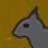

 Squirrelmageddon!
Details
 |
|
| Playtime | Not Played |
| Last Activity | Never |
| Added | 21/10/2021 14:32:43 |
| Modified | 03/10/2022 22:37:49 |
| Completion Status | Not Played |
| Library | Steam |
| Source | Steam |
| Platform | PC |
| Release Date | 11/10/2021 |
| Community Score | 67 |
| Critic Score | |
| User Score | |
| Genre | Shooter Totale |
| Developer | OA Games |
| Publisher | The Streets Network |
| Feature | Co-Op LAN Co-Op Multiplayer Online Co-Op |
| Links | Centro comunità Discussioni Guide Notizie Pagina del negozio PCGamingWiki |
| Tag | |
Description
About the Game
Squirrelmageddon! is a 3rd / 1st Person, dark humor, sci-fi, run and gun, high score squirrel wave shooter for 1-4 LAN or online players. Set in a dark future where genetically engineered Squirrels have overrun the planet, you are a soldier in the fight to reclaim the earth and prevent the extinction of all humankind.The year Is 2184
Climate change has forced humans to live underground for many years. In our absence, squirrels have become the new apex predator on the planet.
Sometime during the last great war the squirrel experiments began. From what we know, genetically modified squirrels, intentionally infected with an engineered strain of super virus, were to be unleashed upon our enemies.
'I want squirrels of the highest caliber, with a killer instinct, that can withstand being dropped out of drone bomber at 1000 meters!!!' - General Dixon
The Squirrel bio-weapon was designed to do but just one thing - clear entire continents of all human life... They did just that... and more.
It was in the great cities where the first waves of carnage began. Humans are delicious, it would seem.
It took many years for the squirrels to make it far out into the remote areas of the globe, where some humans managed to to survive for decades after the cities were overrun... even so, it was only a matter of time before their fates too, were sealed.
Over the last 100 years, driven by a rabies like insanity and a genetically instilled lust for meat, squirrels have killed almost every living creature on the planet.
Deep within the bowels of the earth, vast government and privately built complexes now contain what little is left of the human race.
The year is 2184 and the world above has changed.
Nature has once again taken over the earth and re-balanced herself. Drones are sending back images daily of a reborn and revitalized world. We are ready to build a new future for humankind.
Yet... as always, this future would be one we would have to fight for.
Early expeditions above ground proved disastrous. Even with our power amour and advanced weaponry, experienced soldiers were proving no match for the enemy.
Though once we knew what to expect in combat, future expeditions gradually made it further and further into the field.
Yet time and time again... radio silence.
It's your turn now. You've been sent top-side and your orders are clear:
Find a way to eradicate the enemy.
You are ready, and you know what to expect. The others have given it a name... they call it:
Squirrelmageddon!